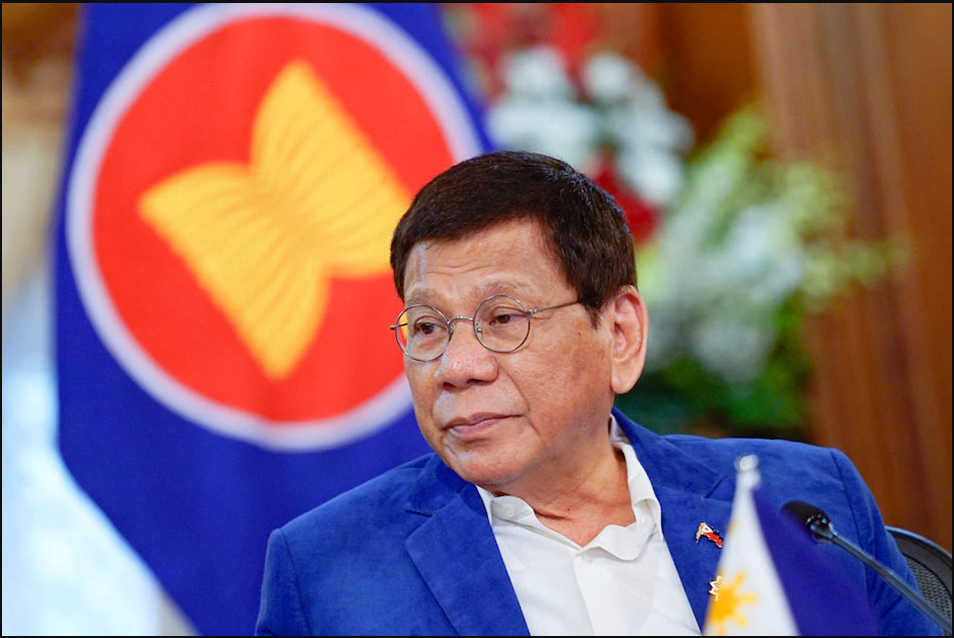

SWS: Duterte satisfaction rating falls to 52 pct
ABS-CBN News | Posted at Oct 29 2021 11:59 PM
MANILA — President Rodrigo Duterte's net satisfaction rating fell to 52 percent in the third quarter of 2022, 10 points below his previous score last June, the Social Weather Stations (SWS) said Friday night.
Of 1,200 adult Filipinos polled last September, 67 percent of respondents said they were satisfied with Duterte's performance, 15 percent said they were not, while 11 percent were undecided, the SWS said in its survey result.
Duterte's net rating, or the difference between those satisfied and dissatisfied with his performance, was at 52 percent or still "very good", the pollster noted.
"This is 10 points below the very good +62 in June 2021 and the lowest since the good +45 in June 2018," it said
Duterte's rating decline was due to decrease in satisfaction in his performance in all areas except Mindanao. According to SWS, his score fell from "very good to good" in Metro Manila, and "very good to good" in Balance Luzon and the Visayas.
Satisfaction with Duterte in Mindanao, the President's home island, remained "excellent."
His net satisfaction in both urban and rural area also dropped. It also declined among men and women but it remained "very good" in both genders, SWS said.
Duterte's score dropped in all age groups, the lowest being among 35 to 44-year-old adults. His rating also fell in all educational groups, especially among college graduates.
SWS last month bared that Duterte's satisfaction rating peaked in November 2020, despite the COVID-19 pandemic that left businesses struggling and millions jobless in the Philippines.
COVID mismanagement had a “weak” correlation with satisfaction rating, said SWS fellow Geoffrey Ducanes, an associate professor at the Ateneo de Manila University Department of Economics.
One factor in Duterte's high rating is "his strong base support, which has stuck with him so far, regardless of economic and other developments," he said.
Earlier this month, SWS revealed almost half or 45 percent of Filipinos believe reporting anything critical against Duterte's administration could be "dangerous".
Only a total of 42 percent of adult Filipinos also thought that they could say anything against the President "openly and without fear."